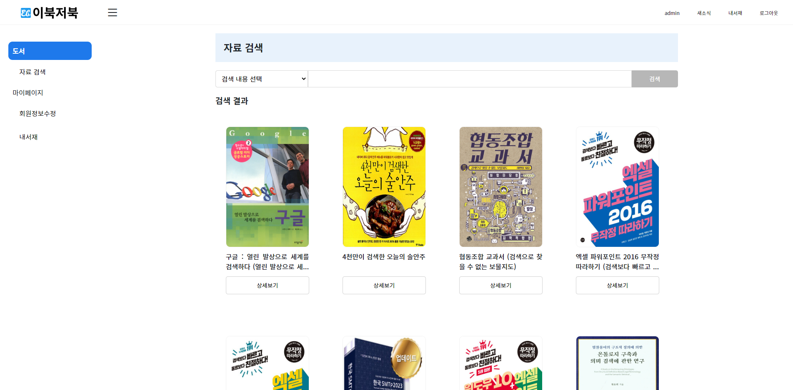
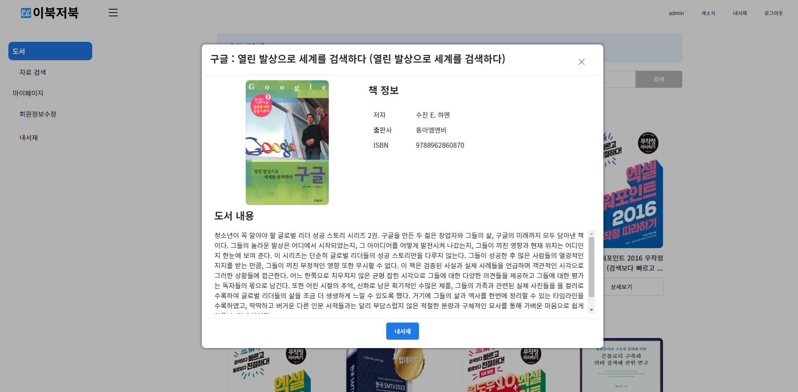
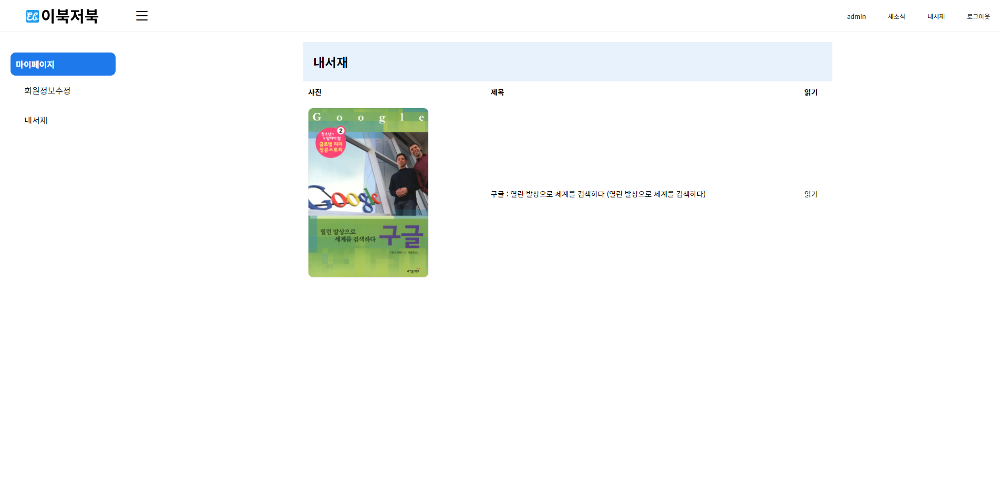

Academy
상세보기
프로젝트명
이북저북 : 전자 도서 사이트
작업기간
2022.10 ~ 2022.11 (약 1개월 소요)
적용기술
HTML, CSS, js, bootstrap, jQuery, JSP, Spting, MyBatis, Oracle
주요역할
총괄 / 기획 / 디자인 / 프론트 / DB SQL
작업계기
현대 사회에 접어들면서 수많은 편리한 통신기기들과 매체들이 등장하여 종이책의 입지는 점점 줄어들고 있습니다. 도서관이나 서점에서 직접 찾아가서 종이책을 구매/대여하는 번거로운 과정을 생략하여 어디서든 책을 읽는 간편함을 추구하여 대세로 자리 잡은 전자책을 찾는 소비자들의 편의를 위해 기획하게 되었습니다.
도서 목록 화면
도서 화면은 로그인을 통해서만 사용할 수 있습니다.
도서 API를 활용하여 정보를 불러옵니다.
도서 상세보기 화면
기본 도서 정보를 확인할 수 있습니다.
도서 상세보기에서 내서재 버튼 클릭 시 내서재에서 언제든지 책을 읽을 수 있습니다.
마이페이지를 통해 내서재에 등록한 모든 책들의 목록들이 나타납니다.
새소식 화면
새소식 메뉴에서 공지사항, Q&A, 커뮤니티, 도서요청을 통해서 다른 회원들과 소통을 할 수 있습니다.
MyBatis를 사용한 CRUD 게시판입니다.